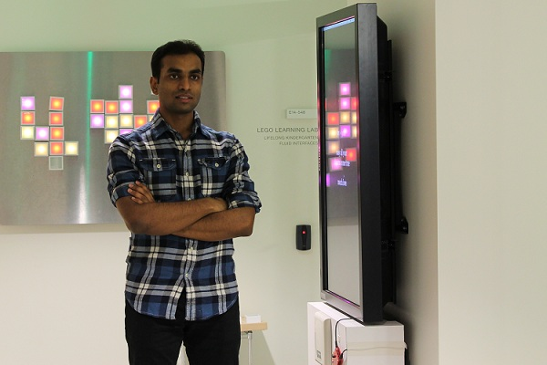

|

|
Otkrist Gupta
Otkrist Gupta is a Ph.D. candidate at MIT Media Lab. He works at camera culture,
his research is focused on inventing new algorithms for deep learning for health
screening and diagnosis, hidden geometry detection,
exploiting techniques from optimization, linear algebra and compressive sensing.
He also works on designing algorithms for futuristic 3D projective displays.
He completed his bachelors from Indian Institute of Technology Delhi (IITD)
in Computer Science with emphasis on algorithms and linear algebra. Before
joining MIT Media Lab, he worked for one year in field of High Frequency Trading
at Tower Research Capital.
|